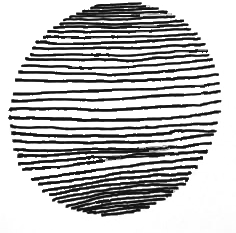
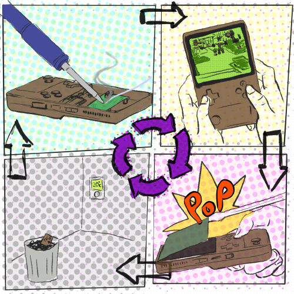

 bio
I am a teacher and researcher at University of West of England and by night I make noise that I sometimes call music. My current research interests focus around Expressive Computer Interaction, with recent work looking at the design of new muscial instruments. I'm exploring these notions through a post-human lens, with a particular focus on Computing within Limits and the immediate climate emergency.
I received a PhD in Computer Science, where I looked at the theory of extensible datatypes in and around the programming language Haskell, in 1999 and BSc in Computer Science in 1996. I worked in Silicon Valley for many years, mostly at ATI/AMD, on GPU hardware and software. Whilst I loved working there I now question its social political and environmental impact and am now trying to develop an alternative, more sensitive, approach to tech.
 circular making practice
My current work aims to focus in on complexity and degrowth within a digital context, read through the following
- infrastructural complexity inherent in digital technologies;
- the socio-political complexity induced by them; and finally,
- the ontological complexity (individual’s ways of relating to their environment) hindered by digitization.